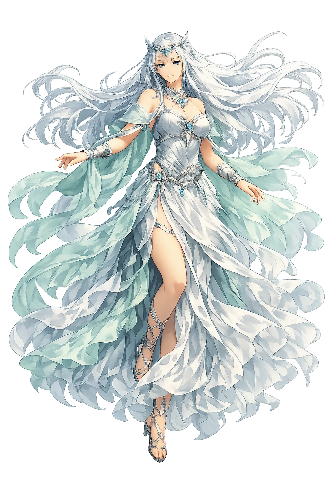
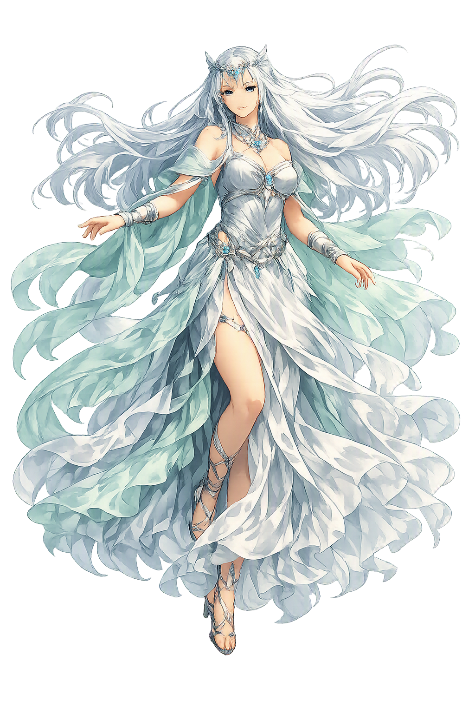

Unicode restoration and ASCII comparison
𒀭𒊩𒌆𒆤
The name in its original Mesopotamian form. Ninlil (𒀭𒊩𒌆𒆤) is attested in the source tradition — “Lady of the wind”. Its original diacritics and script distinctions carry the full phonetic and orthographic weight of the source tradition.
ninlil
The plain ninlil form is identical to the Unicode restoration. Because this name is already written in Latin letters, no diacritics, stress, or script information were lost — only capitalization differs.
Ninlil
The Unicode restoration does not need to recover lost marks for Ninlil. Its value is canonical spelling and consistent cataloguing, not the reconstruction of erased orthography. The domain is readable as-is to both DNS and humanity.
Ninlil.com → ninlil.com
The non-ASCII characters in Ninlil are encoded while the ASCII remains visible. To the DNS, it is Punycode. To humanity, it is Ninlil.
How Ninlil travels from ancient script to the modern URL
Owned, ideal, and ASCII forms of Ninlil
Ninlil
Restores 𒀭𒊩𒌆𒆤. The full Unicode restoration. ninlil.com is not in the PuniCodex collection — it is watched for release; if it drops, this temple upgrades to an owned flagship.
How Ninlil was spoken
Wind, Air, Queenship, and the Descent into Darkness
Ninlil is the Sumerian goddess of the wind and the air, the consort of Enlil and queen of the Mesopotamian pantheon. Her name, written 𒀭𒊩𒌆𒆤, simply means 'Lady of the Wind' — nin ('lady, queen') plus lil ('wind, air'). Where Enlil commands the storm and the decree of kingship, Ninlil is the gentler sovereign of the moving air itself: the breath that fills the lungs, the breeze that carries pollen, and the unseen presence that links heaven and earth.
This temple honours Ninlil as both queen and mother. She is the mother of Nanna/Sîn the moon, of Nergal lord of the underworld, of Ninazu, and of Enbilulu the canal inspector. The myth Enlil and Ninlil (ETCSL 1.2.1) weaves her story together with the theological geography of Mesopotamia: even the queen of the air must know the underworld, because descent and generation are inseparable in the Sumerian cosmos.
The moving air itself — breath, breeze, and the life-giving currents that cross the Mesopotamian plain.
Consort of Enlil and queen of the gods; the divine matriarch from whom lunar and netherworld powers descend.
Mother of Nanna/Sîn; the lunar crescent is her descendant's sign, linking wind-queen to night-light.
The mythic journey into the underworld that generates new gods and new seasons of life.
Stories of Ninlil
Ninlil's myths are stories of boundary-crossing: the wind that moves between worlds, the queen who descends into darkness, and the mother whose children personify moon, death, water, and order. She is not a passive consort; she is the necessary counterpart without whom Enlil's kingship would be incomplete.
The Sumerian poem Enlil and Ninlil (ETCSL 1.2.1) tells how the young god Enlil saw Ninlil by the canal at Nippur and desired her. After he impregnated her, the assembled gods banished him from the city for his offence. Ninlil followed him into exile. In the underworld Enlil met her three times in disguise — as the gatekeeper, the river-man, and the ferryman — and each union produced a child: Nergal, Ninazu, and Enbilulu. The story explains the origin of three underworld or chthonic deities and makes theological sense of descent: even the king and queen of the air must generate the powers of the depths.
Ninlil is the mother of Nanna/Sîn, the moon god, and in some traditions also of Inanna/Ištar and Utu/Shamash. The moon's regular cycle becomes an extension of the air-queen's generative power: what moves unseen by day shines by night. Royal hymns from Ur and Nippur invoke Ninlil alongside Enlil as the divine parents who legitimate the king and protect the city.
In the myth The Descent of Enlil and related hymnic traditions, Ninlil accompanies or follows Enlil into the netherworld. Her presence there is not punishment but cosmic necessity: the queen of the upper air must also know the lower world, so that the breath of life and the breath of the dead remain in relation. This descent mirrors the better-known descent of Inanna, but it is told through the lens of divine sovereignty rather than individual transformation.
Ninlil's principal cult centre was at Nippur, where she shared the great sanctuary complex with Enlil. Sumerian temple hymns praise her house and link her authority to the Ekur, the 'Mountain House' of Enlil. In later Assyrian religion she was equated with Mullissu, the consort of Aššur, and her cult travelled with Assyrian kingship to cities such as Nineveh and Assur. Her worship thus spans Sumer, Babylonia, and Assyria across more than two millennia.
Air is the most taken-for-granted element. We do not see it until it moves, do not value it until it fails. Ninlil is the goddess of that taken-for-grantedness made sacred: the breath in the body, the wind in the grain, the medium that carries both speech and storm. Her marriage to Enlil is the marriage of power to atmosphere: he decrees, she enables; he commands, she circulates.
Enter Extended Lore